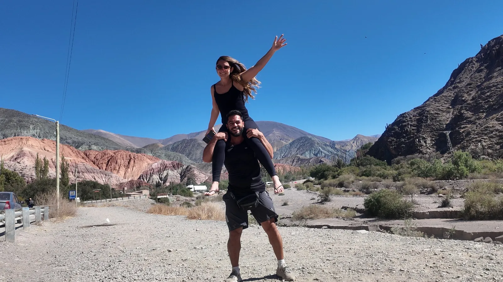
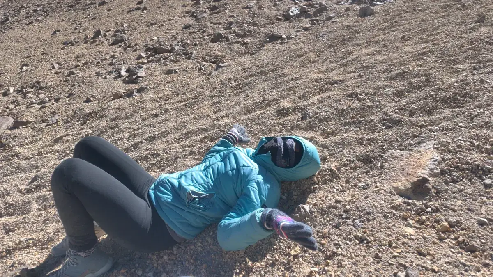

Roteiros de viagem de carro pela Argentina, Chile e Brasil, contados por quem fez.
Roteiros parada por parada, dicas de fronteira e vídeos de cada viagem. Tudo o que a gente queria ter lido antes de pegar a estrada.
Vou planejar uma viagem
Roteiros, documentos, seguro e o que esperar de cada lugar.
Ver guias e roteiros →Quero ver os vídeos
Cada viagem vira vídeo no YouTube: 6,4 mil inscritos e 61 mil views em 90 dias.
Assistir no YouTube →Sou marca, pousada ou passeio
Números, formatos de parceria e contato direto.
Ver mídia kit →Por onde já passamos
Cada país tem uma página com os lugares, roteiros e vídeos daquela viagem.

Chile
Atacama · Valle de la Luna · Tatio · Cerro Toco
Argentina
Salta · Jujuy · Salinas Grandes · fronteira
Brasil
Foz do Iguaçu · Itirapina · Serra Negra · Lagoa SantaPara onde ir neste fim de semana?
Escolha de onde você sai e o QuickTrip monta o fim de semana: destino, passeios, hospedagem e custo de combustível. Por enquanto, saindo de Rio Preto e região.
Posts recentes

Mal de altitude no Atacama: como evitar, sintomas e se o seguro viagem cobre
O que a gente sentiu no Tatio e no Cerro Toco, a ordem certa dos passeios, sinais de alerta e se o seguro cobre.

Viajar sem seguro viagem ou contratar só quando passar mal: o que acontece?
Quem paga o hospital, o que muda na Argentina e por que o seguro comprado depois de ficar doente não cobre.

Cerro Toco: como foi tentar subir a pé um vulcão de 5.604 m
O carro 4x2 não subiu, seguimos a pé e voltamos a uns 400 m do cume. Altitude, frio, AllTrails e dicas.

Geysers del Tatio: como é o passeio mais frio do Atacama
Saída de madrugada, -14°C no dia em que fomos e gêiseres a mais de 4.300 m. O que levar e como se preparar.
Seguro viagem para Argentina, Chile e Uruguai: é obrigatório e qual a cobertura mínima?
O que cada país exige, qual seguro a Argentina aceita, quanto de cobertura médica contratar, se o seguro do cartão vale e como usar o cupom ESTRADAEMDOIS.
Foz do Iguaçu em 1 dia: dá para ver Cataratas e Itaipu?
Dá, sim. Horários, ingressos e o que saber para encaixar os dois passeios no mesmo dia.
Aperte o play e viaje com a gente
O que a gente usa e indica
Real Seguro Viagem com desconto
A Argentina exige seguro de turistas. Compare planos de várias seguradoras e use o nosso cupom.
Achadinhos que a gente usa na estrada
Itens de carro, camping e viagem que levamos, todos num lugar só.
Ver a lojinha →Foz do Iguaçu em 1 dia
PDF de 8 páginas com a ordem dos passeios, gastos, horários e checklist.
Quero o e-book →Vamos mostrar o seu lugar para quem viaja de carro?
Vídeos no YouTube, Reels, TikTok e guias aqui no site, com filmagens de drone. A gente vai, vive a experiência e conta do nosso jeito.

A gente é a Andressa e o Guilherme.
Viajamos de carro pelo Brasil, Argentina e Chile e contamos tudo: as paisagens, os quilômetros rodados e os perrengues que ninguém conta.